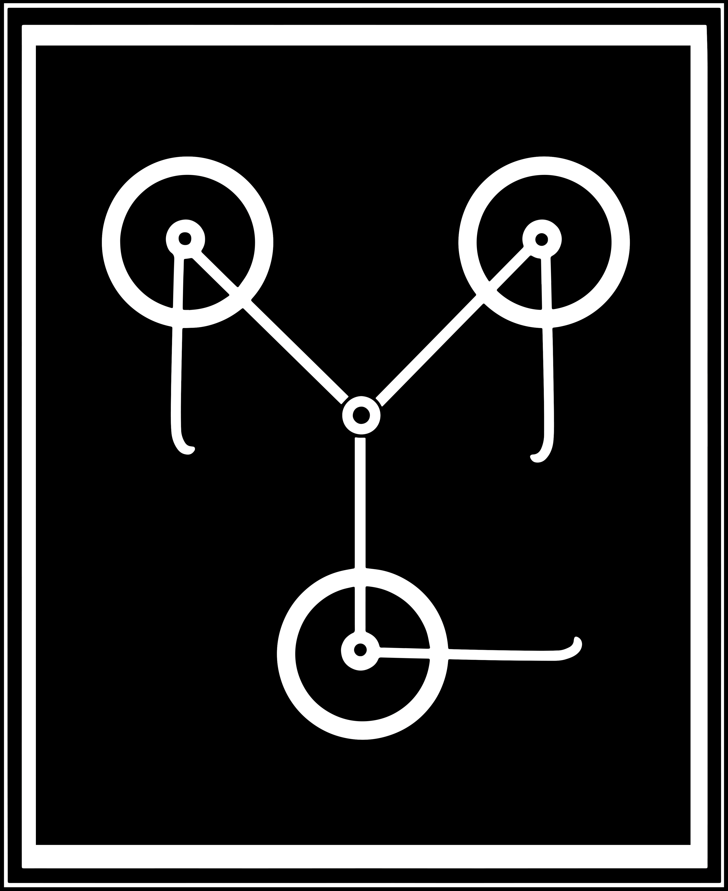

Flux Capacitor toolkit for systems biology
Flux Capacitor: a Toolkit for Systems Biology
Flux Capacitor is an open source software toolkit for systems biology and flux balance analysis (FBA). Flux Capacitor is focused on the application of FBA to study metabolism.
Flux Capacitor was created by Daniel Ortiz-Martínez. Daniel has a long career as a researcher in the area of machine learning and also holds an MSc degree in Bioinformatics.
The toolkit includes the following features:
Flux Capacitor has been coded using C, C++, Python, R and shell-scripting. Flux Capacitor is known to compile on Unix-like and Windows (using Cygwin) systems. See the "Documentation and Support" section of these instructions if you experience problems during compilation.
It is released under the GNU Lesser General Public License (LGPL).
To install Flux Capacitor, first you need to install the autotools (autoconf, autoconf-archive, automake and libtool packages in Ubuntu). If you are planning to use Flux Capacitor on a Windows platform, you also need to install the Cygwin environment. Alternatively, the tool can also be installed on Mac OS X systems using MacPorts.
On the other hand, some of the functionality incorporated by Flux Capacitor requires the previous installation of third-party software (see below).
Once the autotools are available (as well as other required software such as Cygwin or MacPorts), you can proceed with the installation of the tool by following the next sequence of steps:
Obtain the package using git:
$ git clone https://github.com/daormar/flux-capacitor.git
cd to the directory containing the package's source code and type
./reconf.
Type ./configure to configure the package.
Type make to compile the package.
Type make install to install the programs and any data files and
documentation.
You can remove the program binaries and object files from the source
code directory by typing make clean.
By default the files are installed under the /usr/local/ directory (or similar, depending on the OS you use); however, since Step 5 requires root privileges, another directory can be specified during Step 3 by typing:
$ configure --prefix=<absolute-installation-path>
For example, if "user1" wants to install the Flux Capacitor package in the directory /home/user1/flux-capacitor, the sequence of commands to execute should be the following:
$ ./reconf
$ configure --prefix=/home/user1/flux-capacitor
$ make
$ make install
The installation directory can be the same directory where the Flux Capacitor package was decompressed.
IMPORTANT NOTE: if Flux Capacitor is being installed in a PBS cluster
(a cluster providing qsub and other related tools), it is
important that the
configure script is executed in the main cluster node, so as to
properly detect the cluster configuration (do not execute it in an
interactive session).
Flux Capacitor internally uses CPLEX as a mathematical solver to obtain the solutions required by FBA and FVA procedures. Therefore, users also need to install this package to be able to access most of the functionality of the toolkit.
Graphviz open source graph visualization software is used to ellaborate graphical representations of metabolic networks.
Flux Capacitor uses some Python modules to obtain results. Below we enumerate such modules:
The libSBML library is used to access to the information contained in the Recon X human metabolic reconstruction. Flux Capacitor requires the C++ Linux version. Downloading instructions can be found here.
Flux Capacitor uses packages provided by the very well known Bioconductor software project for the analysis and comprehension of genomic data. Bioconductor packages are used in Flux Capacitor to deal with microarray data.
The sybilSBML R package is temporarily required in combination with libSBML to extract information from metabolic reconstruction files. For the future we plan to drop this dependency, implementing this functionality into Flux Capacitor in a native manner.
The Flux Capacitor toolkit is under development. Basic usage instructions are being added. In addition to this, there are some toolkit extensions currently in preparation:
Incorporate interactive Python mode (currently the toolkit offers a command-line interface).
Enable use of alternative mathematical solvers for FBA and FVA (current version only supports CPLEX).
Project documentation is being developed. Such documentation includes:
If you need additional help, you can:
Shlomi, T., M. N. Cabili, M. J. Herrgård, B. Ø. Palsson, and Eytan Ruppin (2008). “Network-based prediction of human tissue-specific metabolism”. In: Nat. Biotechnol. 26(9), pp. 1003–10.
Gudmundsson, S. and I. Thiele (2010). “Computationally efficient flux variability analy- sis”. In: BMC Bioinformatics 11, p. 489.
Hebenstreit, D., M. Fang, M. Gu, V. Charoensawan, A. van Oudenaarden, and S. A. Teichmann (2011). “RNA sequencing reveals two major classes of gene expression levels in metazoan cells”. In: Mol. Syst. Biol. 7, p. 497.
Erdrich, P., R. Steuer, and S. Klamt (2015). “An algorithm for the reduction of genome-scale metabolic network models to meaningful core models”. In: BMC Syst Biol 9, p. 48.